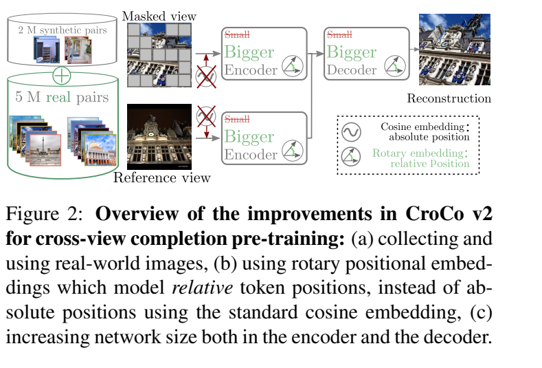

N02 / 2022-10 / P1
CroCo
对本专题的回答
第二视图帮助补全第一视图的缺失区域，使跨视关系成为预训练信号。
设计取舍。可利用图像预训练几何表征；共视配对仍有信息成本，补全成功也可能部分依赖语义捷径。
机制、输入与运行
用第二视图帮助补全第一图的遮挡 patch，使预训练学习可迁移的跨视几何关系。
同场景两图
跨视图预训练
进一步阅读的问题
跨视补全比单图 MAE 多用了什么信息，如何排除仅靠语义补全的解释？
从跨视图预训练到光度自监督，标注成本被消除、转移还是压入教师？
模型训练不使用深度真值，仍可能依赖相机标定、SfM 配对、预训练匹配器、几何教师或合成数据。要比较监督路线，需要追踪整条知识来源，不能只读最后一阶段的 loss。
本章把跨视预训练、教师—学生、光度自监督和训练期特权信息放在同一张账本上。关注的是怎样把信息变成几何能力，以及如何设计实验分离数据、架构、初始化与目标函数的作用。
监督路线不只按“有没有标签”区分，而要追踪目标究竟约束什么自由度。跨视补全学习可迁移关系，几何标签直接约束形状但会传递噪声，对齐损失选择忽略哪些歧义，渲染闭环以图像解释间接学习几何。它们的收益、捷径与成本各不相同；初始化、标签质量和目标函数必须分别归因。
查看支持这些判断的证据 ↓第一种希望额外视图帮助推断被遮挡的内容；第二种将教师的几何知识与偏差一起迁移；第三种要求场景和相机共同解释目标图像。三者都可能出现捷径：单图纹理补全、拟合教师伪影、或把目标图像信息直接泄漏进场景表示。
训练时目标图像要参与预测目标相机，但生成 Gaussian 的 context 分支不能直接读取目标外观。否则网络可能把目标像素“抄”进场景再渲染回去，而不学习从 context 重建。NAS3R 令 context tokens 只看 context，target tokens 可看更广的视图；这是一道信息流约束。
该约束不自动保证几何唯一。深度、相机、颜色仍可能相互补偿，且有 gauge 与可见性歧义。用合法射线反投影正深度、控制相机参数和训练视角间隔，是额外的结构与课程设计。
各行对应可叠加的选择：预训练任务、标签来源、损失约束和训练期输入。同一模型可以组合多行；比较时分别固定其他选择，再讨论收益与代价。
| 学习信号 | 几何能力从何而来 | 收益 | 代价／未约束部分 |
|---|---|---|---|
| 跨视补全 CroCo／CroCo v2；Gekko 扩展共视代理 | 第二视图为被 mask 区域提供可匹配内容；共视筛选让这条路径可学习 | 可扩大图像预训练，并迁移到 stereo／flow 或几何初始化 | 语义／纹理补全仍可能走捷径；配对成本、数据量、RoPE 与规模共同影响收益 |
| 直接几何与教师伪标签 Depth Anything V2／DA3 | 将几何教师或合成真值变为稠密学习目标 | 把精确合成信号迁移到真实图像，扩大监督覆盖 | 复制教师的系统偏差；标签数量不等于边缘精确度，教师训练与生成标签成本上移 |
| 对齐后的点图损失 MoGe 系列 | 显式消去允许的尺度／平移，再监督全局和局部形状 | 避免不可辨识自由度主导误差，小结构得到相应权重 | 对齐掉的量不由该损失恢复；局部允许自由度过多也不能保证全局一致，需结合全局项 |
| 真实锚点＋教师局部梯度 MoGe-2 | 局部对齐过滤不可靠真实标签，再用教师梯度与真实边界补全 | 同时利用真实域尺度锚点和合成教师细节 | 教师错误可能影响筛选与补全；真实数据细节改善不保证米制指标同步改善 |
| 渲染闭环 NAS3R | 由目标图像监督相机与场景共同解释，多视与信息流约束阻止直接复制 | 减少直接几何标签需求；可与预训练先验组合 | 几何、颜色与相机可相互补偿；初始化、LPIPS、相机条件、课程及外部先验仍有成本 |
| 对应＋相对深度先验 Reliev3R | 二维对应约束多视注册，预训练相对深度约束稠密形状 | 减少获取完整多视三维标签的需要，让不同先验提供互补约束 | 匹配器与深度模型传入上游成本和偏差；与 NAS3R 的从图像渲染闭环应分别归因 |
| 训练期特权信息 Motion- and Gravity-Aware | 运动或重力信号在训练时约束或塑造几何表示 | 部署可不再输入同类测量 | 训练仍支付获取信息的成本；域外运动与重力假设需验证 |
MoGe 的全局／局部对齐改变了如何惩罚形状误差；MoGe-2 的标签流程改变了希望网络学到哪一种形状。二者可以同时有效，证据却来自不同消融。MoGe-3 又改变特征邻域并联合微调，其 K=0 的增益已经包含基础模型变化，不能把全部改善算到推理迭代。
先看论文已经观察到的结果。下表按论文内部对照解释，不把不同数据、输入或对齐协议的分数拼成排名。原文观察与本专题解释分别列出；未复现模型。
| 对照与条件 | 原文结果 | 可以归因到哪里 |
|---|---|---|
| CroCo v2 · 附录 Table 9 · 实验展开 | 相同大模型下，有／无跨视预训练的 Middlebury bad@1 为 15.5%／43.4%；FlyingThings final flow EPE 为 2.45／10.57 | 支持预训练的迁移价值；下游仍有监督，不证明单靠补全已能恢复相机或米制尺度 |
| MoGe-2 · Table 4，ViT-B · 实验展开 | raw → improved real labels：F1 10.3 → 12.5，局部 point Rel 6.37 → 6.26；metric depth Rel 15.8 → 16.5 | 支持标签流程改善局部细节的折中；不能推断改善了所有几何误差 |
| MoGe-3 · Table 3；Figure 4 · 实验展开 | 冻结基础模型的 2D／3D 对照隔离 refiner；联合训练模型 K=0 已较原 MoGe-2 改善 | 架构、联合训练与推理迭代要用不同对照归因 |
| NAS3R / From None to All: Self-Supervised 3D Reconstruction via Novel View Synthesis · Tables 7–9 · 实验展开 | 增加训练数据、增加 context 视图和监督迁移分别得到验证；默认随机初始化与使用几何先验的配置分表 | 支持闭环可学习并可迁移；不单独证明某个深度参数化的贡献，更不代表整套训练没有外部学习组件 |
| 证据入口 | 应固定的变量 | 主要归因风险 |
|---|---|---|
| CroCo v2 Table 1 | 数据、RoPE、encoder/decoder 规模逐项改变 | 把所有收益归为“跨视预训练” |
| Gekko 同架构同数据对照 | CroCo 基线容量、训练步数与配对 | 以共视代理探针成绩代替独立几何迁移 |
| NAS3R 随机初始化/先验配置 | 输入 K、视图数、目标位姿、模型大小 | 将有教师或已知 K 的结果写成完全无几何信息 |
| DA3 表示/头/教师消融 | 训练集、融合位姿及条件 token | 跨行评测条件改变导致错误因果解释 |
| VGGT-Ω 数据与规模曲线 | 数据量与参数量分别固定 | 把更高训练预算的收益归为某一模块 |
CroCo v2 的改善来自真实配对、相对位置编码、更大 encoder 与 decoder 的组合；下游 stereo/flow 仍使用任务监督。Gekko 用跨视补全相对单图 MAE 的误差改善构造共视代理，值得关注其数据效率，但部分探针阈值在评估像素上拟合，不能把该成绩当作独立概率校准。
NAS3R 的目标图像训练期可见，是为了估计相机与监督渲染；context-only 推理才是部署接口。实验报告必须清楚区分训练时用到的信息和实际重建时用到的信息。
第二视图帮助补全第一视图的缺失区域，使跨视关系成为预训练信号。
设计取舍。可利用图像预训练几何表征；共视配对仍有信息成本，补全成功也可能部分依赖语义捷径。
用第二视图帮助补全第一图的遮挡 patch，使预训练学习可迁移的跨视几何关系。
同场景两图
跨视图预训练
跨视补全比单图 MAE 多用了什么信息，如何排除仅靠语义补全的解释？
真实配对、RoPE 和模型扩展增强可迁移跨视表征，支持后续几何模型初始化。
设计取舍。下游迁移有受控证据；完整升级包含多项变化，不能把全部增益归于补全目标或某一架构项。
以真实图像配对、RoPE 和更大 encoder/decoder 扩展 CroCo，为后续 DUSt3R 系列提供初始化。
真实同场景图像对
跨视图预训练
真实配对、RoPE 与模型规模各如何消融？下游训练又新增了哪些监督？
通过预测相机和 Gaussian 渲染目标视图，配合非对称信息流防止直接复制目标外观。
设计取舍。无需直接三维标注也可学习几何；颜色、相机与形状仍能补偿，随机初始化与有先验版本必须分开。
同时估计几何与目标相机，以新视图渲染监督训练；注意力掩码阻止目标图像泄漏到上下文重建。
训练仅多视 RGB；自行估计相机
渲染自监督训练
§3.1–3.3；§4.3–4.6：RE10K/DL3DV 及跨域实验，随机初始化与预训练变体。
基础无先验训练与利用预训练先验的变体分开；光度一致不唯一确定真实几何。
本专题的证据归纳 ↑target 能参与相机预测却不能向 context 泄漏外观，这条信息边界如何实现？
原文 · 2603.27455v2 · 本地全文文本 · 总览记录
交叉阅读：07 · 可渲染场景与几何证据
二维对应约束注册，相对深度先验约束稠密形状，替代部分多视三维标签需求。
设计取舍。不同先验各覆盖一种几何信息；教师和匹配器把监督成本移到上游，偏差也可能传入学生。
以2D对应约束多视注册，以预训练相对深度约束稠密形状，减少获取全套3D标注的需要。
图像匹配＋单目深度先验
弱几何监督训练
§3.1–3.3；§4.2–4.3：DL3DV 域内与 ScanNet++ 域外比较。
没有多视3D标注不等于从零无先验；匹配器和单目深度模型仍带入监督成本与偏差。
本专题的证据归纳 ↑匹配器与单目深度先验的误差是否相关？当两者冲突时训练目标怎样权衡？
原文 · 2604.00548v1 · 本地全文文本 · 总览记录
交叉阅读：02 · 单目先验、尺度与条件输入
将跨视补全相对单图 MAE 的误差改善用作额外视图有效性的代理监督。
设计取舍。从目标构造中提取共视线索；代理受模型能力影响，评估像素上拟合阈值的探针不能证明独立概率校准。
比较跨视补全相对单图 MAE 的误差改善，把额外视图提供的信息作为共视伪标签来训练第四输出通道。
图像对；无几何标注目标
共视感知预训练
§4；§5.2–5.8、附录：同架构同数据的 CroCo 对照、匹配/位姿/点图与共视探针。
改善量是带噪代理；部分共视评测阈值在被评估像素上拟合，不能当作独立校准验证。
本专题的证据归纳 ↑补全误差改善是否总意味着共视？重复纹理与强单图先验会如何影响代理标签？
训练期残余光流和估计重力为几何学习提供辅助线索，随后迁移到 RGB 推理。
设计取舍。部署减少额外输入需求；重力和流并非真值运动，辅助信号的估计成本与偏差仍属于监督链。
在训练中注入残余光流和重力方向，通过后续微调让重建骨干吸收辅助几何线索。
训练期 residual flow / gravity；推理 RGB
训练期特权信息
§3.1–3.3；§4.3–4.5及附录：π³/VGGT 注入位置、数据规模与几何评测。
重力来自 GeoCalib 估计；全局仿射流残差并非纯物体运动标签。需区分辅助输入训练和 RGB 推理。
本专题的证据归纳 ↑残余 flow 为什么不等于物体运动真值？特权输入去掉后如何验证知识迁移？
原文 · 2610.22177v1 · 本地全文文本 · 总览记录
交叉阅读：06 · 动态几何、运动与 4D 查询

以真实图像配对、RoPE 和更大 encoder/decoder 扩展 CroCo，为后续 DUSt3R 系列提供初始化。
动机 · 方法 · 原图 · 实验 ↗
同时估计几何与目标相机，以新视图渲染监督训练；注意力掩码阻止目标图像泄漏到上下文重建。
动机 · 方法 · 原图 · 实验 ↗
用预训练单一 ViT 的部分跨视图注意力与 Dual-DPT 预测 depth-ray；通过教师标签改善几何监督。
动机 · 方法 · 原图 · 实验 ↗合成数据的几何精确，却可能缺少真实材质和成像噪声；真实传感器标注覆盖自然分布，却可能在薄结构、反光和边缘处失真。教师—学生路线用强教师连接两者，但教师在真实域的系统偏差也会被复制。
“零样本”也有层次：下游微调没见过该数据集，不表示预训练骨干、教师或图像来源完全没有相近内容。这里不据此否定结果，而是要求把可追溯的数据层级记录清楚。
从研究设计看，最有价值的比较是固定输入、模型、预算和数据，只改变监督源；其次是固定总成本，研究更贵标签与更多廉价图像如何交换。只比较最终最大模型，难以判断具体方法的作用。
| 假设 | 实验设计 | 反证信号 |
|---|---|---|
| 共视代理增强真正的跨视关系 | 控制单图纹理难度，比较真实/错误配对下的几何迁移 | 错误配对仍获相同收益，可能主要是表征正则化 |
| 教师细节改善来自精确标签 | 固定教师规模和训练图像，扰动边缘深度或提高标签分辨率 | 边界指标不随标签质量改变 |
| 光度自监督能补强已有骨干而不破坏尺度 | 固定初始化比较微调前后未对齐和对齐几何、相机与 NVS | 只改善 RGB，尺度与表面系统退化 |
以上为本地图的研究延伸，不代表已完成的消融。
表格与方法讨论按固定来源核对；本页统一记号、比较框架及研究假设属于阅读分析。跨论文分数保留各自协议，未进行模型复现。
§3.1–3.3；§4 表5(a)(b)：表示与尺度解耦、通用条件训练对专用训练。
§3–4；§7.2 表6–7：输出目标、注意力安排、共享头、教师监督消融。
§3.1–3.5；§4.3：25% register 替换、派生 point/matching 损失与规模实验。
§3.1–3.3；§4.3–4.6：RE10K/DL3DV 及跨域实验，随机初始化与预训练变体。
§3.1–3.3；§4.2–4.3：DL3DV 域内与 ScanNet++ 域外比较。
§3.1–3.3；§4.3–4.5及附录：π³/VGGT 注入位置、数据规模与几何评测。
§3.1–3.3；§4–6：补全、超分、无提示任务与数据/架构/传感器泛化分析。
§3；§4、附录C：单目/双目迁移、共视比例及 decoder 深度。
§3.1–3.3；§5 表1及附录表9：立体匹配/光流与初始化消融。
§4；§5.2–5.8、附录：同架构同数据的 CroCo 对照、匹配/位姿/点图与共视探针。
§2–5；§6–7：DA-2K、传统基准、教师/数据消融与 metric 版本。